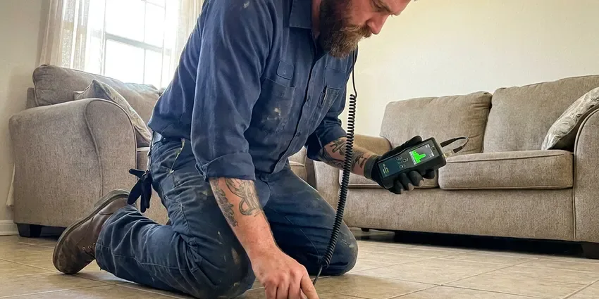

Polybutylene Plumbing Replacement in Portland, OR
Protect your home and resale value with polybutylene plumbing replacement in Portland, OR, done by licensed repipe crews.
- Fast, reliable service
- Local Portland experts
- Fast Leak Detection
- Code Compliant Work
Ready for Polybutylene Pipe Replacement in Portland, OR?
Call now and we will confirm whether your home has polybutylene pipe.
Specialized Polybutylene Plumbing Replacement Services in Portland, OR
JFL Plumbing sees polybutylene in many homes built during that era. The pipe breaks down from the inside when exposed to chlorine and chloramine in city water, so failures come without warning, often at fittings or in hot water lines.
Our expertise includes:
- Yard service line replacement from meter to house
- Minimize disruption to your home.
- Accurate leak detection and pipe assessment.

Additional Plumbing Maintenance Services in Portland, OR
Our maintenance and specialty plumbing services in Portland, OR catch small problems before they become emergencies.


Customers
Why Choose JFL Plumbing for Polybutylene Plumbing Replacement in Portland, OR?
Our experienced team understands the challenges of replacing these systems in Oregon homes, from slab foundations to finished walls.
- Expert Assessment, Our team reliably identifies polybutylene piping and assesses the best replacement strategy for your home.
- Better Water Quality, New pipes mean cleaner, healthier water for your family.
- Insurance Friendly, You get documentation insurers and buyers want to see after replacement.
Citywide Coverage
JFL Plumbing proudly serves every neighborhood and community within Portland, ensuring that no matter where you are, our expert polybutylene plumbing replacement services are just a phone call away.
Experienced Team
Our team of licensed plumbers has extensive experience specifically with polybutylene plumbing replacement, having completed numerous projects in Portland homes.
Safety-First Approach
Safety is a top priority in all our polybutylene plumbing replacement projects. We closely follow all Oregon plumbing codes and industry best practices, making sure that your new plumbing system is not only functional but also completely safe and compliant.
Trusted Certified Portland Plumbing Services Professionals
At JFL Plumbing, we take pride in providing certified plumbing services throughout Portland, OR. Backed by recognized industry credentials, our experienced plumbers combine technical skill with genuine customer care. Whether it is repair, installation, or maintenance, we follow strict safety and quality standards to deliver long-lasting results you can trust.
Call Us Now PHCC Plumbing Contractor Recognition
PHCC Plumbing Contractor Recognition Better Business Bureau (BBB) Accreditation
Better Business Bureau (BBB) Accreditation Angi Certified Pro
Angi Certified Pro ISO 9001 Quality Management Certification
ISO 9001 Quality Management CertificationReliable Polybutylene Plumbing Replacement Services in Portland, OR
Emergency Polybutylene Pipe Repair in Portland, OR
A burst polybutylene pipe is an emergency that requires immediate attention, since water damage can spread quickly. JFL Plumbing offers emergency services to address sudden pipe failures in Portland, OR. While a full replacement is the long-term solution, we can provide temporary repairs to stop the flow of water and limit damage, securing your property until a comprehensive repipe can be scheduled. Don't hesitate to call us if you experience a sudden leak or burst pipe.

Code Compliance and Permits in Portland
Any major plumbing replacement in Portland, including polybutylene repiping, requires adherence to local building codes and often requires permits. JFL Plumbing handles all aspects of permitting and makes sure that every replacement project meets or exceeds Portland and Oregon plumbing regulations. This means that your new plumbing system is safe, properly installed, and passes all necessary inspections, protecting your investment and the long-term integrity of your home's infrastructure.
Partial Polybutylene Pipe Replacement in Portland, OR
In some cases, a full home repipe may not be right away feasible or necessary. We can assess your system and perform targeted partial polybutylene pipe replacement, addressing specific problem areas or sections that are actively leaking or showing signs of coming failure. Our plumbers in Portland, OR will provide an honest assessment and recommend the most sensible approach for your situation.
Polybutylene to PEX Transition in Portland, OR
Transitioning from polybutylene to PEX is a popular and cost-effective solution for many homeowners in Portland, OR. We use specialized transition fittings and techniques to cleanly connect your existing main water line to the new PEX system. This provides a watertight and code-compliant connection, providing a complete upgrade to a modern, durable plumbing material throughout your home's interior. This transition offers the benefits of PEX without the need for extensive excavation or disruption to your main service line.
Fitting Failure and Emergency Repair in Portland
Acetal plastic and copper crimp ring fittings are often the first part of a poly system to fail. A burst fitting in an attic or wall can cause major damage in minutes. We respond to emergency leaks, make temporary repairs and then schedule a full replacement. Stopping the problem for good is the only lasting fix.
Cost-Effective Polybutylene Solutions in Portland, OR
We understand that polybutylene replacement is a significant investment. JFL Plumbing is committed to providing cost-effective solutions matched to your budget and needs. We offer transparent pricing and various options, including PEX and copper, so your Portland, OR home receives a high-quality, durable plumbing upgrade without unnecessary expense.
Full Home Polybutylene Repiping in Portland
Our complete full home repiping service involves removing all existing polybutylene pipes and replacing them with modern, durable alternatives. This is often the most effective solution to permanently eliminate the risks associated with this faulty piping. We keep minimal disruption, carefully planning the project to complete it efficiently and restore full plumbing functionality to your Portland home.

Polybutylene Leak Detection and Repair in Portland
Before a full replacement, or if you suspect polybutylene issues, our team offers advanced leak detection services. We can pinpoint the exact location of leaks, often hidden behind walls or under floors. While repairs on polybutylene are temporary, identifying the source helps in planning a complete replacement strategy for your Portland property.
Polybutylene Plumbing Replacement Near Me in Portland, OR
If you are searching for polybutylene replacement near me, JFL Plumbing offers free inspections throughout Portland. We confirm what pipe you have and explain your options. Then we give you a firm written price.
If you're searching for 'polybutylene plumbing replacement near me' in Portland, OR, JFL Plumbing is your local expert. Our crews are conveniently located to provide fast response and efficient service across the entire metro area.
JFL Plumbing at a Glance
- Licensed and insured plumbers serving Portland, OR
- Same-day appointments and 24/7 emergency response
- Clear written estimates, no hidden fees
- 4.8-star rated by 657+ Oregon customers
Portland Map
Portland Information
- Population
- 630,498
- Area codes
- 503/971/360
- Service area
- Portland and communities within 40 miles
- Nearby
- Lake Oswego, Beaverton, Bethany, Tigard
Polybutylene plumbing replacement is especially critical for older homes in Portland, OR where fluctuating temperatures and local water chemistry can accelerate the breakdown of these problematic pipes, leading to unexpected and costly water damage.
Expert Services
Trust our professionals for reliable JFL Plumbing solutions in Portland, OR.
Our Specialized Plumbing Services in Portland, OR
At JFL Plumbing, we provide a complete range of plumbing services across Portland, OR. From leak detection to full system installations, our team ensures fast, precise, and affordable service for both residential and commercial properties. Explore our core services below:


How Our Polybutylene Plumbing Replacement Process Works in Portland, OR
Here is how we take your home from poly pipe to a modern plumbing system.
Request a Quote
Contact JFL Plumbing at (971) 333-7694 to schedule an on-site assessment. We'll evaluate your current plumbing system and discuss your replacement options.
Detailed Assessment
Our experienced plumbers perform a thorough inspection, identifying all polybutylene pipes and potential issues. We then provide a complete, transparent quote.
Efficient Replacement
Once approved, our team meticulously removes old polybutylene pipes and installs new PEX or copper plumbing. We work efficiently to minimize inconvenience.
Frequently Asked Questions About Polybutylene Plumbing Replacement in Portland
The cost for polybutylene plumbing replacement in Portland, OR varies significantly based on factors like the size of your home, the chosen replacement material (PEX is typically $4,000 to $10,000, while copper can be $8,000 to $15,000 or more), and accessibility of pipes. We provide a detailed, upfront quote after a complete home assessment.
A typical full home repipe for polybutylene plumbing usually takes between 3 to 5 days. Factors like home size, number of fixtures, and ease of access to existing pipes can affect the timeline. Our team works diligently to complete the project efficiently while maintaining quality.
Both PEX and copper are strong choices. PEX is flexible, less expensive, more freeze-resistant, and handles ground movement better than rigid pipe. Copper offers superior rigidity, a long lifespan, and a strong track record. The 'better' choice depends on your budget, preferences, and home's specific needs.
Most policies do not pay for replacing old pipe, though they may cover sudden water damage. Some insurers raise rates or decline coverage for homes with polybutylene.
Properly installed PEX piping typically has a lifespan of 25 to 50 years, while copper piping can last 50 to 70 years or even longer. Both are significant upgrades from polybutylene and offer decades of reliable service for your Portland, OR home.
Yes, JFL Plumbing stands behind our work with comprehensive warranties on both materials and labor for our polybutylene plumbing replacement services. We want you to have complete peace of mind with your new, dependable plumbing system.
We commonly use Uponor PEX-A and Type L copper with Viega ProPress or soldered fittings. We recommend materials based on your home and water conditions.
Polybutylene pipe replacement is a complex plumbing project that requires specialized tools, knowledge of plumbing codes, and significant experience. Attempting a DIY replacement can lead to costly mistakes, leaks, and potential code violations. It is best left to licensed professionals.
What People Are Saying About Our Plumbing Experts?

Emily R.
I called JFL Plumbing for plumbing repair, and the technician was fast, polite, and thorough. They explained the problem clearly and fixed it the same day. I will definitely hire them again. Highly recommended!
Plumbing Repair · Tigard, OR
James P.
Our commercial plumbing system had a leak under the sink, and JFL Plumbing handled it professionally. The plumbers arrived quickly and restored everything without disruption to our customers.
Commercial Plumbing · Gresham, OR
Mark T.
When our office needed drain cleaning, JFL Plumbing provided quick, reliable service. The plumber arrived on time and made sure every drain flowed perfectly before leaving. Very satisfied.
Drain Cleaning · Aloha, OR
Laura S.
I scheduled a water heater replacement, and the team made the process smooth and affordable. The new unit works perfectly, and they cleaned up after completing the job.
Water Heater Replacement · Gresham, ORRobert G.
The trenchless sewer replacement saved our front yard. They walked us through the camera inspection footage first so we knew exactly what we were paying for.
Sewer Line Replacement · Lake Oswego, ORSofia M.
Two new toilets installed in one visit, no mess left behind, and the tech even adjusted a faucet he noticed was dripping. Fair pricing and really friendly.
Toilet Installation · Tigard, OR